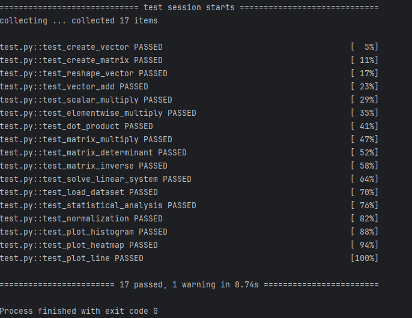

Лабораторная работа №2
Задача: научиться использовать NumPy и строить графики.
Как решал: использовал подсказки к функциям, уже имел опыт работы с NumPy, matplotlib и seaborn.
Нюанс: При решении сталкнулся с нюансами, что не очень хорошие получаются графики из тестов (из- за входных значений, например оценки учитываются с 1 до 5, а в тесте есть 6, но тут опять-таки на это можно закрыть глаза.)
Скриншот прохождения тестов:

Код: можно посмотреть в репозитории.